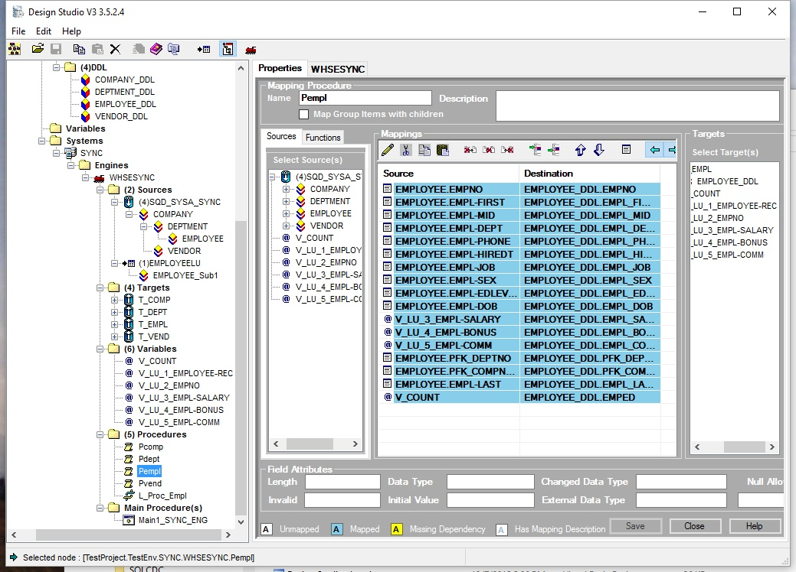
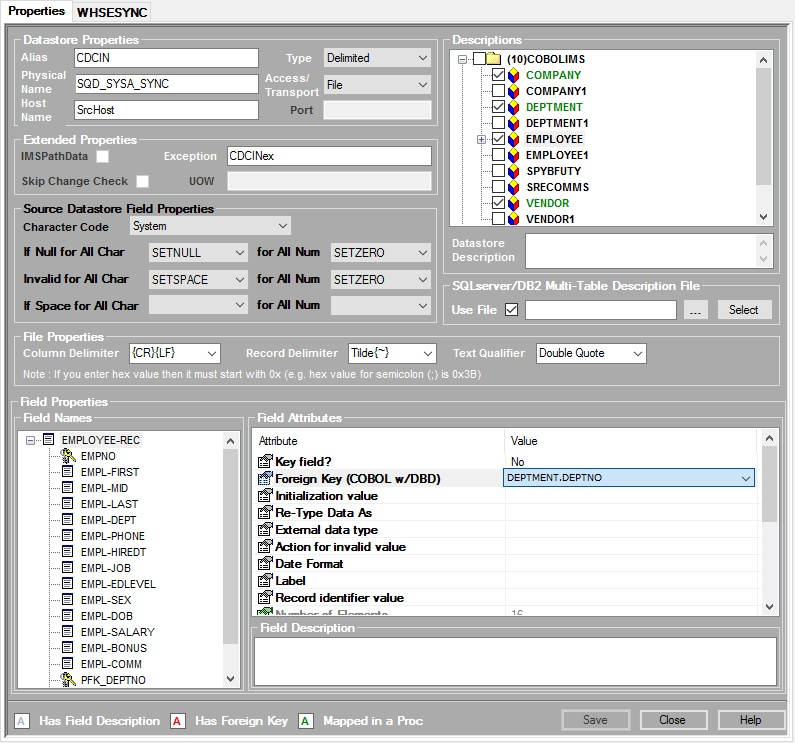
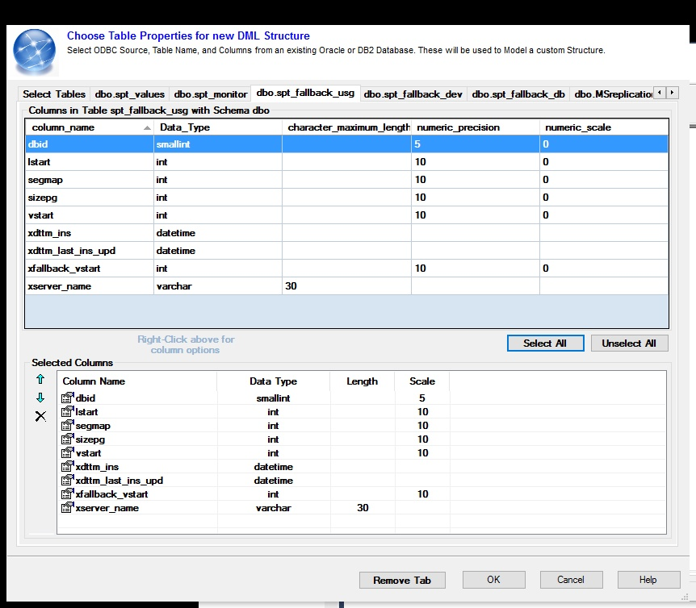
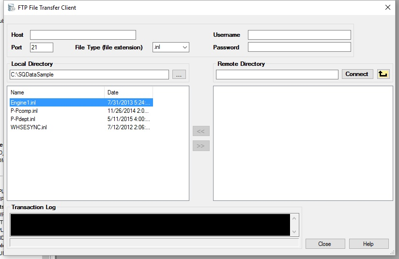
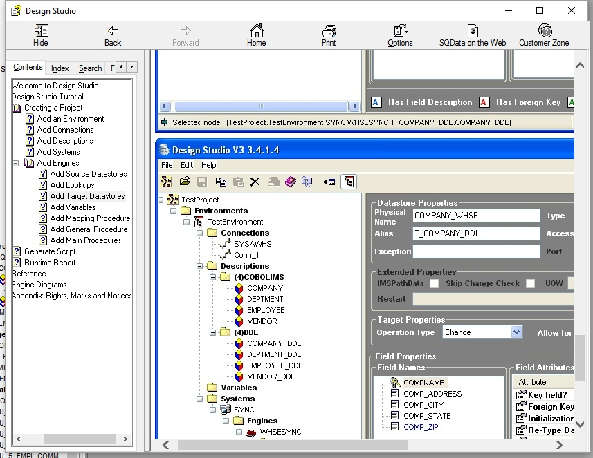
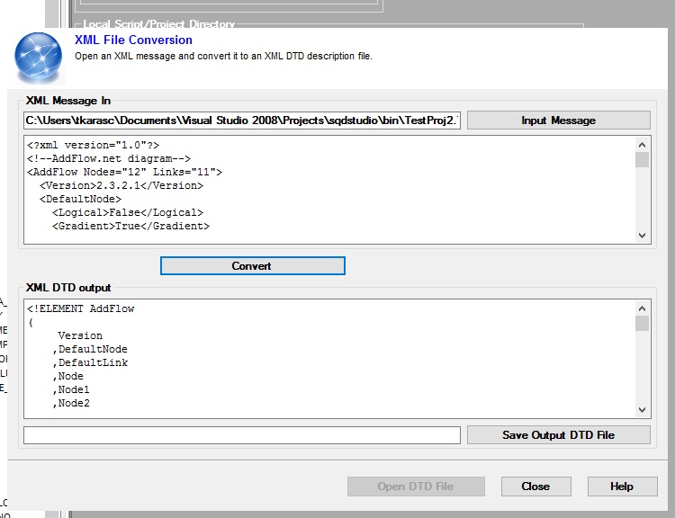
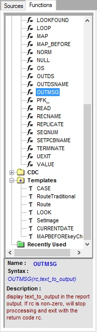

VB.NET Design Studio - Field Mapping Panel

Design Studio - Datastore Panel

Design Studio - DML creation by directly retrieving from System Tables (Oracle, DB2, SQLsvr)

Design Studio - FTP Client

Design Studio - Help File - Created with Help and Manual 4.0

Design Studio - XML to DTD converter

Design Studio - Function Tree created by XML
